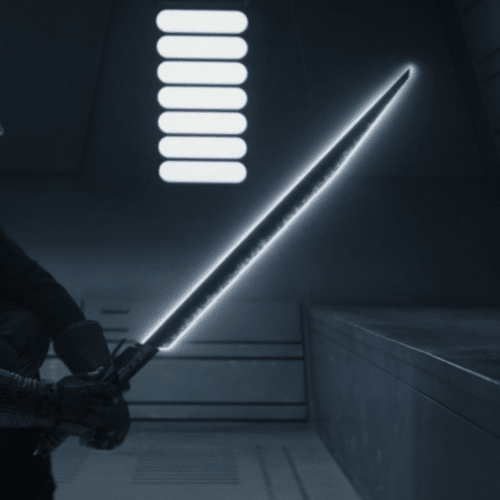

Lightsabers
The lightsaber, a weapon of elegance and deadly precision, is an iconic symbol within the Star Wars universe. More
than just a tool for combat, the lightsaber is a reflection of the wielder's connection to the Force and their
personal journey.
Crafted by Jedi and Sith alike, lightsabers are powered by Kyber crystals, Force-attuned crystals that resonate with
the energy of the Force. The color of the lightsaber blade is determined by the crystal used, with Jedi
traditionally wielding blue or green blades, and Sith favoring red. The crystal is at the heart of the lightsaber,
and its attunement is considered a rite of passage for Force-sensitive individuals.
The design of a lightsaber hilt is a deeply personal process. Jedi construct their lightsabers as part of their
training, each component chosen with care. The hilt's length, shape, and additional features are tailored to the
individual's combat style and preferences. Sith, in contrast, may adopt a more aggressive or ominous design,
reflecting their embrace of the dark side.
Lightsabers are not just weapons; they are extensions of the Force user's will. The blade is a plasma energy field
that can cut through almost anything, making the lightsaber a versatile tool in combat and a symbol of the Jedi and
Sith's martial prowess. A skilled Force user can deflect blaster bolts, engage in acrobatic duels, and perform feats
of precision that are unmatched.
The Jedi Code emphasizes the responsible use of the lightsaber as a tool for defense, never for attack. Jedi often
spend years honing their skills with the weapon, mastering various combat forms to be prepared for any situation.
The Sith, on the other hand, see the lightsaber as a tool of dominance and aggression, an extension of their power
over the dark side.
Lightsaber duels are a spectacle, a dance of skill and strategy between Force-sensitive adversaries. The clash of
lightsabers echoes through the galaxy, signifying the eternal struggle between light and dark. Iconic duels, such as
those between Luke Skywalker and Darth Vader, showcase the emotional depth and narrative power embedded in
lightsaber combat.
The lightsaber's legacy extends beyond its function in combat. It is a symbol of hope, justice, and the eternal
struggle between good and evil. Whether in the hands of a Jedi, a Sith, or other Force-sensitive beings, the
lightsaber remains an enduring and central element in the mythology of Star Wars.
Lightsaber variations

Darth Saber
Shoto Sabers
Switch Blade